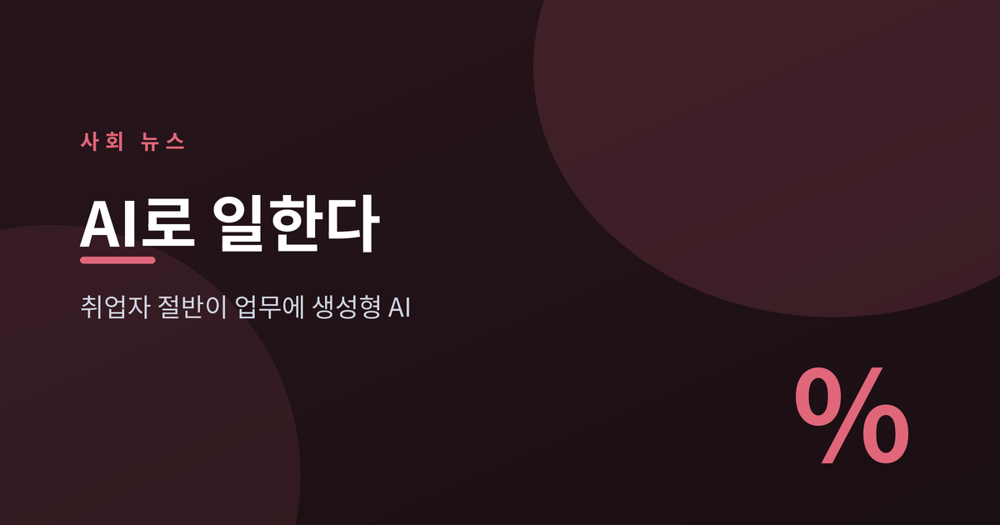
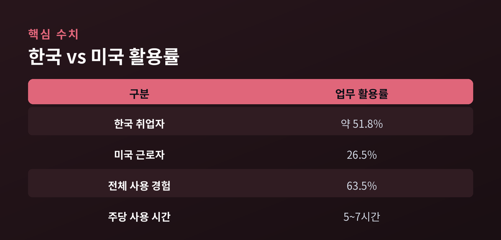
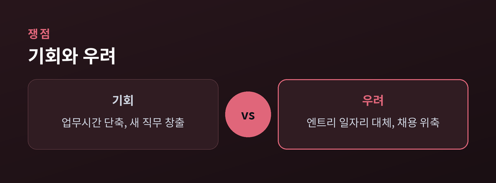
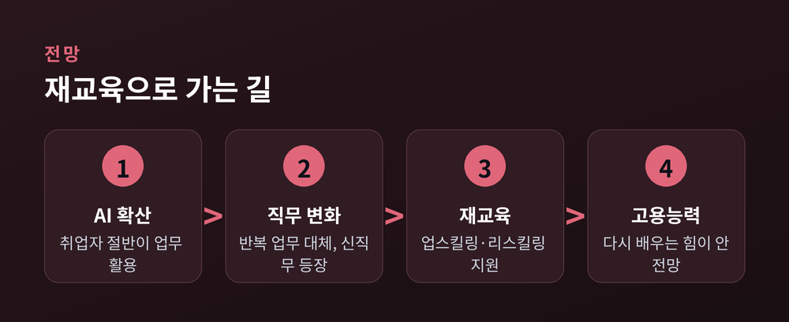

일터의 변화와 노동의 미래

이번 글에서는 국내 취업자 절반 이상이 이미 생성형 AI를 업무에 쓴다는 조사 결과를 정리해 보겠습니다. 무슨 조사이고, 왜 눈여겨봐야 하며, 일터의 미래는 어디로 향하는지 차분히 짚어보겠습니다. 장밋빛 전망과 우려를 함께 살펴보려 합니다.
한국은행이 내놓은 조사 결과가 눈길을 끕니다. 국내 취업자 가운데 업무에 생성형 AI를 활용하는 비율이 약 51.8%로 집계됐습니다. 전체 사용 경험까지 넓히면 63.5%에 이릅니다.
과반이라는 숫자도 그렇지만, 확산 속도가 더 인상적입니다. 미국의 업무 활용률(26.5%)과 견주면 약 두 배 수준입니다. 인터넷이 자리 잡던 초기와 비교하면 여덟 배 이상 빠른 속도라는 분석도 나왔습니다.
이번 수치는 2025년 5~6월 전국 만 15~64세 취업자 5,512명을 조사한 한국은행 이슈노트에 담겼습니다. 중앙은행이 가계조사를 바탕으로 낸 자료라는 점에서 신뢰도가 높습니다. 다만 나라별 조사 시점과 문항이 달라, 국가 간 단순 비교에는 신중할 필요가 있습니다.

가장 먼저 눈에 띄는 변화는 시간입니다. AI를 쓰는 근로자는 평균 업무시간이 3.8% 줄었습니다. 주 40시간 기준으로 매주 1.5시간가량을 아낀 셈입니다.
그런데 여기서 흥미로운 지점이 있습니다. 아낀 시간이 곧 성과로 이어지지는 않았습니다. 업무시간 절감과 처리량 증가 사이의 상관관계는 사실상 0에 가까웠습니다. 개인은 일을 빨리 끝냈지만, 조직 전체의 생산성으로는 아직 뚜렷이 연결되지 않은 것입니다.
일자리를 향한 시선도 엇갈립니다. 한국노동연구원은 노동시장 전반의 충격은 아직 제한적이되, 청년층·정보통신업·사무직에서 변화가 먼저 나타난다고 봤습니다. 데이터 처리나 단순 응대 같은 반복 업무는 대체 압력을 받는 반면, AI를 설계하고 다루는 직무는 사람이 모자랍니다. 실제로 한 조사에서 직장인 절반가량은 "회사가 AI를 들인 뒤 채용이 줄었다"고 느꼈습니다.
빨라진 일과 흔들리는 일자리가 같은 자리에 놓여 있습니다.

정부도 움직이고 있습니다. 고용노동부는 향후 5년간 100만 명 이상에게 AI 직업능력개발을 지원하겠다고 밝혔습니다. 청년 구직자를 위한 훈련 과정을 늘리고, 중소기업 재직자를 위한 AI 훈련확산센터도 새로 지정합니다.
교육 현장의 변화도 이어집니다. 교육부는 재직자를 위한 인공지능·디지털 집중과정 운영 대학을 30곳에서 38곳으로 넓혔습니다. 전문대학은 지역 AI 교육의 거점으로 키우기로 했습니다.
방향은 분명해 보입니다. 예전엔 하나의 일자리를 오래 지키는 것이 안정이었습니다. 지금은 바뀌는 직무에 맞춰 계속 다시 배우는 능력, 곧 '고용 가능성'을 지키는 쪽으로 무게추가 옮겨가고 있습니다. 물론 이런 재교육이 모든 이에게 고르게 닿을지는 아직 지켜봐야 할 과제입니다.

정리하면 이렇습니다. 취업자 절반이 AI로 일하는 시대는 이미 도착했고, 남은 질문은 그 변화를 누가 어떻게 감당하느냐입니다.
"기술의 속도보다 중요한 것은, 사람이 다시 배울 시간입니다."
AI가 일을 대신하는 세상에서 우리에게 필요한 것이 무엇이냐고 물으신다면, 저는 망설임 없이 '다시 배우는 힘'이라고 답하겠습니다.
참고 출처: 한국은행, MBC, 아시아투데이, 한국노동연구원, 파이낸셜뉴스, 고용노동부, 교육부